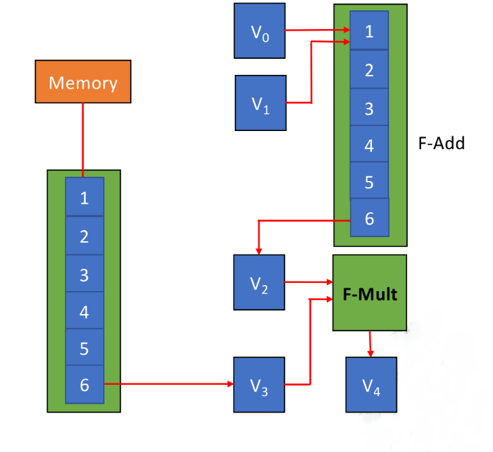
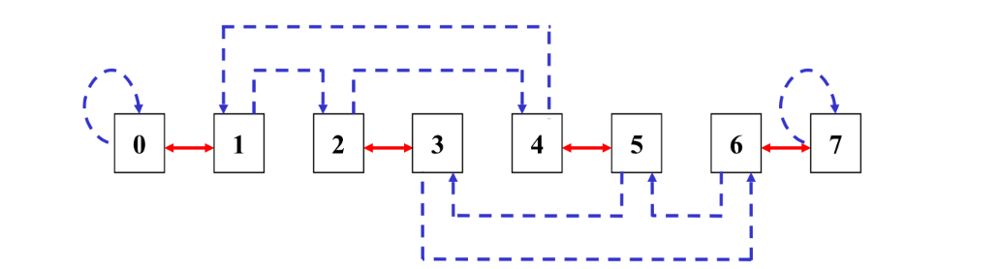

Chapter10 Data-Level Parallelism (DLP) and Single Instruction Multiple Data (SIMD)
Vector Processor
Processing Methods:
- horizontal processing method: 按顺序依次处理
- vertical processing method: 同一层级的计算并行处理
- vertical and horizontal processing method: 对长向量进行划分，每一部分内部纵向处理，整体上横向处理
例如，计算$D=A\times(B+C)$，每一个向量长度为$N$。
horizontal processing method:
- $d_1\leftarrow a_1\times(b_1+c_1)$
- $d_2\leftarrow a_2\times(b_2+c_2)$
- ...
- $d_N\leftarrow a_N\times(b_N+c_N)$
每一个$d_i$的计算涉及到一次加法和一次乘法，加法和乘法之间有数据依赖。总共有$N$个数据依赖，进行$2N$次功能切换。
vertical processing method:
- $K\leftarrow B+C$
- $D\leftarrow A\times K$
向量内部的每一个元素的计算可以并行执行。总共有$1$个数据依赖，进行$2$次功能切换。
vertical and horizontal processing method:
假设每$n$个元素一组，$N=S\times n+r$，则一共$S+1$组。总共有$S+1$次数据依赖，进行$2S+2$次功能切换。
CRAY-1

Instruction Types:
- 向量与向量的运算（6拍）
- 向量与标量的运算（7拍）
- 从内存中读向量（6拍）
- 向内存中写向量（6拍）

Note
这里的拍数指的是得到第一个元素/转移第一个元素的时间。由于向量处理器内部是有流水线的，因此在第一个元素计算出来之后，每过一拍出下一个元素。例如，单纯考虑一个操作，$N$位的向量相加一共需要$6+(N-1)$拍。
Improve the Performance of Vector Processor:
- 对于不同功能单元增加硬件数量
- 向量链接技术（vector chaining technology）
- 循环开采技术（recycling mining technology）
- 多处理器系统
Vector Chaining Technology:
将多个向量指令的执行过程重叠，前一条指令的部分结果可立即被下一条指令使用，无需等待全部完成。
仍以之前的$D=A\times(B+C)$为例，假设$B$和$C$都已经提前存放到寄存器$V_0$和$V_1$中，总共需要以下三条指令：
- $V_3\leftarrow\text{memory}$：从内存中读向量$A$到寄存器$V_3$。
- $V_2\leftarrow V_0+V_1$：将寄存器$V_0$和$V_1$中的向量相加，结果存放到寄存器$V_2$。
- $V_4\leftarrow V_3\times V_2$：将寄存器$V_3$和$V_2$中的向量相乘，结果存放到寄存器$V_4$。

Note
这里还有假设：
- 把向量元素转移到功能单元需要额外一拍；
- 将计算结果存回寄存器需要额外一拍；
- 访存操作前的延迟需要额外一拍。
简单来说，就是每条指令在原有基础之上前后各增加一拍。
如果三条指令顺序执行：
$$[(1+6+1)+(N-1)]+[(1+6+1)+(N-1)]+[(1+7+1)+(N-1)]=3N+22$$
如果指令1和指令2并行，然后顺序执行指令3：
$$\max{[(1+6+1)+(N-1)],[(1+6+1)+(N-1)]}+[(1+7+1)+(N-1)]=2N+15$$
如果在上面的基础上采用向量链接技术：
当$V_0+V_1$的第一个元素计算出来后就可以参与指令3，而无需等待$V_0+V_1$的所有元素都计算出来。
$$\max{(1+6+1),(1+6+1)}+(1+7+1)+(N-1)=N+16$$
Warning
不知道为什么指令3在例题中需要7拍，而不是6拍。
Array Processor
多核系统下，不同CPU由阵列机组织在一起。
最常见的结构如下：

处理器形成8×8的处理器阵列，指令通过广播的方式传递。
Processor and Memory:
distributed memory：每个处理器都有一个高优先级的内存。

centralized shared memory：每个处理器对于所有内存的访问优先级相同。
Interconnection Network
网络的作用是连接不同的处理器和内存。
Classification of Interconnection Network:
- static network: 初始化后就无法改变网络连接情况
- dynamic network：随着系统运行可以改变网络连接情况
Single-Stage Interconnection Network
形式化定义：$N$个节点，函数$f$将其连接，使得任意两个节点直接或间接相连，这里的节点可以是处理器，也可以是内存。
Cube Network:
将$N$编码为二进制，一共$n$位（$n=\log N$），因此每一个节点表示为$P_{n-1}...P_i...P_1P_0$
函数$f$一共有$n$个，其中$0\leqslant i\leqslant n-1$：
$$Cube_i(P_{n-1}...P_i...P_1P_0)=P_{n-1}...\overline{P_i}...P_1P_0$$
我们以8个节点为例：
首先根据$Cube_0$进行连接：
然后根据$Cube_1$进行连接：
最后根据$Cube_2$进行连接：

通过以上三次连接，每个节点都与其他节点直接或间接相连，最远相差$3$条线，推广到一般情况是$n$条线：
通过这个例子，我们也可以得知“Cube”这个名字的由来。
PM2I Network:
同样使用上面定义的$n$，函数$f$一共有$2n$个，但实际上$i=n-1$时对应的两个一样，其中$0\leqslant i\leqslant n-1$：
$$PM2_{+i}(j)=(j+2^i)\mod N$$
$$PM2_{-i}(j)=(j-2^i)\mod N$$
仍然以8个节点为例：

每两个节点最远相差$2$条线，推广到一般情况是$n-1$条线。
Shuffle Exchange Network:
同样使用上面定义的$n$，函数$f$分成shuffle和exchange两部分。
对于shuffle部分：
$$shuffle(P_{n-1}P_{n-2}...P_1P_0)=P_{n-2}...P_1P_0P_{n-1}$$
只需要进行一次shuffle：

对于exchange部分，实际上就是$Cube_0$：
$$exchange(P_{n-1}P_{n-2}...P_1P_0)=P_{n-1}...P_1\overline{P_0}$$
也只需要进行一次exchange，得到结果：

每两个节点最远相差$2n-1$条线，也就是最小的节点和最大的节点之间的距离。
Multi-Stage Interconnection Network
将单极网络串联在一起就形成了多级网络。

Switch:
一个记为$m\times n$的开关有$m$个输入端口和$n$个输出端口。
一个$2\times 2$的双功能开关：
一个$2\times 2$的四功能开关：

Three-Stage Cube Network:
三层对应的$f$分别是$Cube_0$，$Cube_1$和$Cube_2$。
这里假设开关都是$2\times 2$的双功能开关，并且采用级控制（每一层的开关状态保持一致），那么整体的网络连接布局一共有$2^3=8$种。

纵轴表示节点，横轴表示开关状态，因此表格展示的是在不同开关状态下的节点连接情况。
Loop-Level Parallelism:
循环有时候可以看作向量的运算，只要循环之间没有依赖就行。
例如：
这个循环之间就是没有依赖的。
这个循环之间就是有依赖的。
我们可以通过改写，将有依赖的循环改成无依赖的循环。例如：
//改写前：有依赖
for(i=0;i<100;i++)
{
A[i]=A[i]+B[i];
B[i+1]=C[i]+D[i];
}
//改写后：无依赖
A[0]=A[0]+B[0];
for(i=0;i<99;i++)
{
B[i+1]=C[i]+D[i];
A[i+1]=A[i+1]+B[i+1];
}
B[100]=C[99]+D[99];